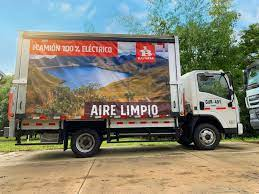
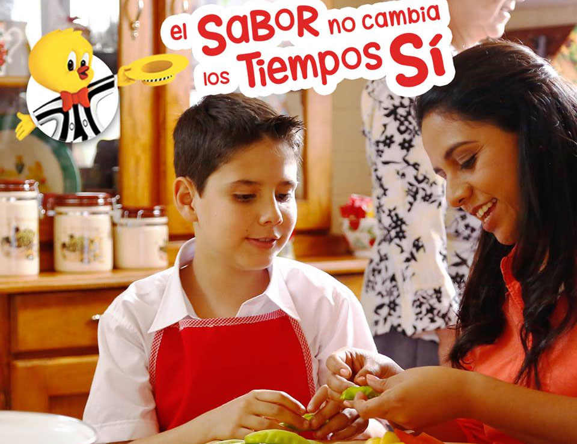
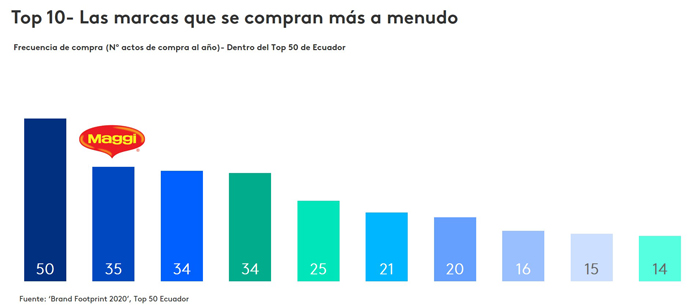
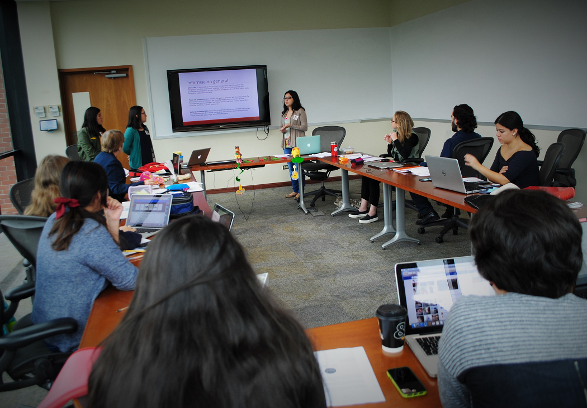

DESARROLLO DE SOFTWARE UNILEVER
Unilever es una empresa multinacional británica creada en 1929 como resultado de la fusión de Margarine Unie, compañía neerlandesa de margarina, y Lever Brothers, fabricante inglés de jabones. Durante la segunda mitad del siglo XX la empresa se diversificó a base de productos hechos de aceites y grasas y amplió sus operaciones en todo el mundo.
En el marco de su proceso de transformación tecnológica, Unilever mostró la necesidad de optimizar su modelo de preparación y reparto, manteniendo el cuidado de las relaciones con sus asociados, es por ello que, COMPUSOFT ha desarrollado un sistema de Gestión Geográfica que le permite a sus clientes visualizar y rastrear sus pedidos por medio de guías o bien por medio de un serial GPS que le brinda no solo seguridad sino que también le permite estimar un tiempo de entrega de los productos solicitados.
Como resultado, Unilever ahora puede controlar la entrega de pedidos, gestión de flotas, software de navegación y planificación de rutas, etc. De esta forma, tanto la empresa como sus asociados, que pueden consultar en todo momento la ubicación en tiempo real de la entrega de sus pedidos, optimizan notablemente sus flujos de trabajo y su planificación diaria. Además, al final de cada entrega, los clientes tienen la opción de enviar una valoración sobre cómo se ha desarrollado el proceso.

Fuente imagen: Forbes
DESARROLLO DE SOFTWARE MALHER
Empresa que inició hace más de 60 años en el hogar de una familia guatemalteca que a lo largo de los años ha podido resaltar de manera notable la cultura culinaria guatemalteca que une al pais en un mismo sentimiento, buscando abrazar los diversos sabores de la vida.
COMPUSOFT ha desarrollado para la empresa guatemalteca MALHER una aplicación que permite a las personas intervenir o bien aprender nuevas recetas por medio de diversas conexiones a canales de YouTube o bien a diversos recetarios de cocina de la tradición culinaria guatemalateca obteniendo como resultado un éxito que permite a las personas autoformarse en la cocina, no solo a mujeres sino que a todas las personas que deseen aprender cosas, tips o recetas nuevas.

Fuente imagen: El país de los Jóvenes
Software de Gestión Empresarial MAGGI
Procedente de la multinacional Nestlé, esta empresa se especializa en la elaboración de sopas instantáneas, caldos, salsas y fideos instantáneos que facilitan las acciones de las personas al disolver en agua o bien preparar con tan solo simples ingredientes que se tienen en casa; convirtiéndose de esta manera en un pionero de la alimentación. Sus productos no son un atajo, son una invitación para que prepares esos sabores auténticos que quizás no has probado aún y recetas que creías difíciles de preparar. Atrévase a probar algo nuevo, o mezcle recetas transmitidas de generación en generación con su toque personal para darles vida.
MAGGI tiene acceso a una cantidad ingente de datos que afectan a sus asociados, datos de distintos orígenes que aportan información de valor a los productores sobre el uso de sus productos estrellas: cuáles son los caldos o sopas que más se consumen y la tasa de probabilidad del éxito del lanzamiento de nuevos productos al mercado

Fuente imagen: Kantar
GESTIÓN DE SISTEMAS CERVECERÍA CENTROAMERICANA
Cón más de 100 años de historia con sede en Guatemala y orgullosamente originaria del mismo país, a lo largo de su trayectoria, la empresa ha vivido dos guerras mundiales y una gran depresión económica. Localmente, una peste de influenza, dos devastadores terremotos, un conflicto armado interno de treinta y seis años y una vida política efervescente, lo cual hace notoria la voluntad de creer, de apostar por la modernidad y su constante renovación en sistemas informáticos y su correcta gestión para poder satisfacer las necesidades de los consumidores y benefactores.
COMPUSOFT lleva trabajando de la mano con Cervecería Centroamericana desde hace algunos años, momento en el que se creó el sistema que se ajusta a las necesidades de nuestros excelentísimos clientes para poder llevar a cabo sus operaciones contables y de control de calidad, con el fin de disponer de un sistema capaz de integrar a sus soluciones desarrolladas a la medida, automatizando sistemas como ERP de la facturación generada en el resto de soluciones con un notable incremento exponencial en el registro de la información necesaria y requerida por nuestros clientes.

Fuente imagen: UFM
¿Te gustaría formar parte de nuestro selecto grupo de clientes?
Contáctanos